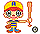

i-Chara
i-Chara was an early mobile service where a small animated character acted as your social agent - learning your preferences and helping with discovery, matching, and everyday decisions.
Long before modern assistant apps, i-Chara explored a surprisingly modern idea: software that felt personal, useful, and socially aware, even on very constrained phones.
What i-Chara was
i-Chara emerged in Japan's early mobile-internet era, when i-mode devices had tiny screens, limited markup, and strict bandwidth constraints. Within those limits, the product still aimed to feel personal and socially intelligent.
The core idea was simple but ambitious - your character did not just represent you visually, it acted for you. It learned your interests, looked for compatible matches, and surfaced options that might matter to you.
This is what makes i-Chara historically interesting: it combined personalization, recommendation, and privacy control long before modern social and assistant platforms made those patterns mainstream.
What the experience likely felt like
You started by creating and customizing your i-Chara identity. Over time, the system observed preference signals and used them to improve matching and suggestions.
- Your character could interact with other characters and report back potential social or commercial matches.
- Vendors could also participate through character-like endpoints, creating early forms of personalized offer flow.
- Location-aware coupons and targeted recommendations were part of the value proposition described in period coverage.
- Identity disclosure was gradual - you could keep contact details private until you explicitly approved sharing.
In modern terms, this sits somewhere between a social graph assistant, a recommendation bot, and an early privacy-aware matching system.
Product constraints that shaped it
- i-Chara was built in a period of highly constrained mobile UX - limited page size, simple graphics, and low-bandwidth interaction loops.
- Those constraints forced the product to keep interactions compact and focused on clear user value rather than rich interface complexity.
- The character model helped provide continuity and identity in a technical environment that could not support modern app-level UI patterns.
Why i-Chara stood out technically
- It pursued agent-style behavior on infrastructure that was far more constrained than today's mobile stack.
- It treated personalization and privacy as connected design goals, not separate concerns.
- It relied on small, lightweight interactions rather than rich UI, forcing clarity in product mechanics.
- It anticipated interaction patterns now common in assistants: memory, matchmaking, and mediated introductions.

If you are familiar with modern assistant products like luzia.com, i-Chara can be read as an early, mobile-first predecessor - focused on practical help through a simple conversational character.
Privacy model ahead of its time
One of i-Chara's strongest design ideas was mediated identity disclosure. Matching and discovery could happen first, while direct personal details stayed private until the user approved sharing.
This approach balanced two goals that are still difficult today: highly relevant personalization and meaningful user control.
Timeline at a glance
| Year | What is recorded |
|---|---|
| 1999-2000 | i-Chara appears as an early mobile social-agent concept in Japan's i-mode environment. |
| 2000 | Public press frames i-Chara around character agents that learn preferences and support matching. |
| 2001 | Additional coverage describes launch context and the service's social-commerce positioning. |
| 2001 onward | Records suggest i-Chara moved into Emuse/eMuse context and did not continue as a standalone consumer brand. |
Sources and references
Essay
Core source
Supporting sources
- LinkedIn - Emuse Technologies (company profile archive)
- Emuse Technologies website reference (historical)
Context links
Confidence note: i-Chara product framing is better documented than direct technical lineage claims.
Supporting context: Emuse connection
- Available records indicate i-Chara later moved under Emuse/eMuse context.
- Public information suggests i-Chara did not continue as a standalone consumer product.
- This archive keeps Emuse as timeline context, while the main focus remains i-Chara itself.
Historical company page reference: www.emuse-tech.com.
Legacy
i-Chara did not persist as a mass consumer product, but its product logic aged well. Many current assistant experiences still rely on the same core principles - memory, matching, relevance, and trust-aware disclosure.
That makes i-Chara important not only as a historical curiosity, but as an early blueprint for practical agent experiences.
Possible i-Chara icon set
A likely icon set associated with i-Chara from archived source material, shown at native size.
These were not just static pixel drawings. The assets were used as lightweight animations, with character variants showing different props or gestures, such as holding a coupon, presenting a flower, or signaling actions.
| Character | Icon | Source |
|---|---|---|
| Hana | Japan Inc archive assets | |
| Box | Japan Inc archive assets | |
| Coupon | Japan Inc archive assets | |
| Baseball |  |
Japan Inc archive assets |
| Balloon | Japan Inc archive assets | |
| India | Japan Inc archive assets |
This page intentionally keeps all key context and references in one place for easier maintenance.